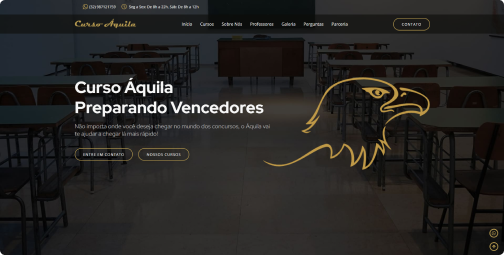
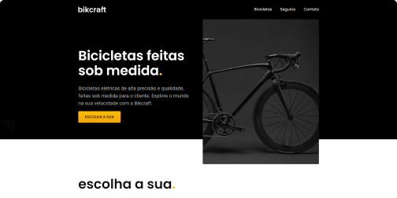

<projetos>
Desenvolvo projetos como o site institucional do Curso Áquila utilizando HTML, CSS e JavaScript. Eu entrego o site totalmente gerenciável com o CMS Wordpress.
Curso Áquila
Desenvolvedor Front End e Designer
O site institucional do Curso Áquila foi o primeiro projeto real na qual eu trabalhei, o confeccionei do zero desde a User Interface até o deploy na hospedagem. Nele eu aprendi o quanto um código mais organizado possível ajuda no fluxo de desenvolvimento e nas refatorações.
Bikcraft
Desenvolvedor Front End e Designer
O site da Bikcraft foi um projeto desenvolvido durante os cursos de User Interface e desenvolvimento Web da Origamid. Conceitos como responsividade, acessibilidade e otimização foram bem aplicados a este projeto.